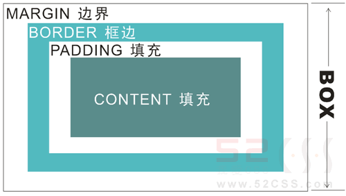
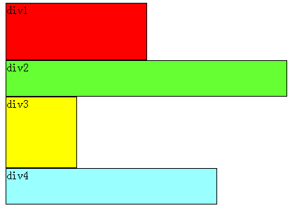
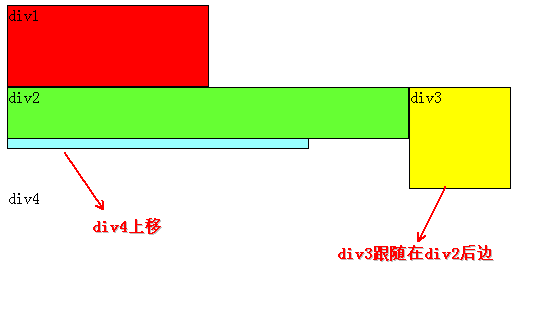

css笔记
CSS
css:层叠样式表,是指定网页元素显示方式的一种方法
基本语法
- 三种引用css的方法
<link rel="stylesheet" href="/static/css/your.css" type="text/css" media="screen" /> <style type="text/css" media="screen"> p { color:red; font-size:12px; } </style> <p style="color: red; font-size: 12px;"></p>
- css selector
p {color: red;} /*tag selector*/ body, ul, ol {} /*body,ul,ol标签*/ #nav {font-size: 12px;} /*id selector*/ .sidebar {font-family:Times} /*class selector*/ h1#content {} /*id为content的h1标签*/ h1.blue{} /*class为blue的h1标签*/ li a {text-decoration: none;} /*descendant selector*/ li #content{} li .blue{} a:link {color: red} /*pseudo-class selector*/ a[title] {color: red} /*attribute selector*/ a[href="www.baidu.com"] {color:red} /**/
- css box
css的盒子模型：

这也就是margin，border，padding三个属性的含义了。
- css定位
- 浮动定位
html文档有一个标准文档流，每一个块级元素（如div）都要单独占一行1

如果给一个元素添加浮动，那么他就会脱离标准文档流，而悬浮于标准文档流之上:

这是给div2,div3添加左浮动后的效果，因为div2,div3添加了浮动，所以二者脱离标准文档流， 那么div4就会上移，因为div1没有浮动，所以div2在div1的下方（不是div1的右方），div3浮动 所以跟在div2的后面。
- 绝对定位与相对定位
- absolute:相对于父元素(top, left, right, bottom)
- fixed: 相对于浏览器窗口
- relative: 相对于元素的原始位置而言,其原始占位信息依然存在
css的常用属性
- foreground color
1: p { 2: color:red; 3: } 4: body { 5: color:rgb(50, 255, 0); 6: }
- background
1: body { 2: background-color:rgb(220, 220, 220); 3: background-image: url('sample.png'); 4: background-repeat:no-repeat; 5: 6: }
- margin
1: margin: 0 auto; /*自动居中*/